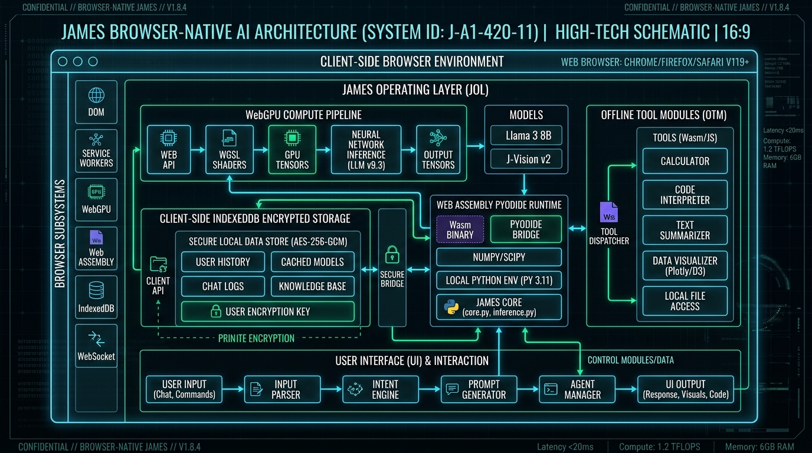

Reference // Genesis
____ ____ ____ __ __ __ __ ____ _ _ ____ __ ____ __ __ ____
( _ \( __)( \( )( )( \/ )( __)( \( )(_ _) ( )( \( )( )( _ \
) / ) _) ) D ( )(__)( ) ( ) _) ) ( )( )( ) D ( )(__)( ) /
(__\_)(____)(____/(______)(_/\/\_)(____)(_)\_) (__) (__)(____/(______)(__\_)
Complete reference for JAMES — the free local browser AI chatbot. Covers architecture, tools, backend selection, model switching, and privacy.
Overview
JAMES (Just A Machine, Engineered for Speech) is a browser-native AI chat interface. It runs a quantized language model entirely inside your browser using WebGPU or WASM — no server, no API, no data leaving your device.
Conversation state is persisted in IndexedDB. Model weights are cached by the browser after first download. Once cached, JAMES works completely offline.
Model Loading
On first launch, JAMES downloads model weights from Hugging Face. This is a one-time operation — weights are cached by the browser indefinitely.
Model files are fetched in parallel chunks and cached locally, so the download can recover gracefully and load faster on future launches.
The progress bar at the top of the terminal reflects download progress. Status transitions are:
downloading → streaming → complete → done
Backends
JAMES selects the best available execution path for your hardware and automatically falls back if a preferred backend is unavailable.
WebGPU — primary (GPU)
The preferred high-performance backend for Chrome/Edge with a compatible GPU. JAMES tries progressively larger models based on your available VRAM.
GPU models (WebGPU / q4f16): Qwen2.5 0.5B — ~400 MB (auto-select) SmolLM2 1.7B — ~950 MB (auto-select) Llama 3.2 1B — ~750 MB (auto-select) Qwen2.5 1.5B — ~950 MB (auto-select) Llama 3.2 3B — ~2.1 GB (auto-select) Gemma 3 1B — ~600 MB (manual only) DeepSeek-R1 1.5B — ~1 GB (manual only) Phi-3.5-mini 3.8B — ~2.2 GB (manual only)
WASM — CPU fallback
Used when WebGPU is unavailable. Slower but compatible with any modern browser.
CPU models (WASM / q4 or q8): Llama 3.2 1B — ~650 MB TinyLlama 1.1B — ~600 MB Qwen2.5 0.5B — ~400 MB SmolLM2 1.7B — ~950 MB
Hardware & WASM Diagnostics
JAMES automatically audits your device capabilities during initialization to pick optimal execution presets and prevent memory crashes:
- WebAssembly Memory64 Detection: Probes runtime support for 64-bit linear memory addresses (Wasm memory64). When present, JAMES expands the CPU WASM memory budget from 40% to 60% of device RAM, enabling larger context windows and smoother CPU inference.
- SIMD & Multithreading: Probes fixed-width 128-bit SIMD, SharedArrayBuffer threads, bulk memory, multi-value returns, native exceptions, and Wasm GC.
- Cross-Browser GPU Normalization:
- Edge & Chrome: ANGLE abstraction layers frequently report vendor strings as
Google Inc. (ANGLE ...). JAMES parses adapter device and architecture fields to isolate the underlying discrete or integrated silicon (NVIDIA, AMD, Intel, Apple). - Firefox: Privacy protections often mask GPU vendor and architecture strings. JAMES probes WebGL renderer information and adapter limits (
maxBufferSizeandmaxStorageBufferBindingSize) to determine device class without compromising fingerprinting resistance.
- Edge & Chrome: ANGLE abstraction layers frequently report vendor strings as
Threads
Each conversation is a thread in the sidebar. Threads represent independent context histories and are saved locally.
- Click + New Chat to start a fresh session.
- Thread titles are derived from the first user message.
- Use the × button to delete a thread permanently.
- The active thread and its history are stored in IndexedDB and restored on revisit.
Smalltalk & Instant Responses
JAMES features a built-in SmallTalkHandler that intercepts common conversational inputs (e.g., greetings, farewells, simple math, philosophy, jokes) and responds instantly without invoking the heavier LLM. This provides a snappy, zero-delay conversational experience, saving battery and compute.
Stop Generation
The stop button instantly halts any active generation by aborting the inference session within the Web Worker. This cancels the stream, removes the thinking indicator, and preserves terminal responsiveness without reloading the page.
- Worker abort signal is dispatched immediately.
- Active stream is cancelled and any partial generated text is preserved.
- The thinking indicator is cleared and the terminal resets to the READY state.
Python Execution
JAMES can execute Python code in-browser via Pyodide. Ask JAMES to run a Python calculation and it
will use the python tool automatically:
```tool:run
{"tool": "eval_python", "params": {"code": "import math; print(math.factorial(20))"}}
```
Execution results are returned into the conversation and used to answer your query. Pyodide loads on first use; subsequent calls are instant.
Tool Reference
JAMES uses model-driven tool calling. When you ask a question that needs live or external data, the model emits a tool call block, the app executes it, and feeds the result back to the model for a final answer:
```tool:run
{"tool": "weather", "params": {"location": "Tel Aviv"}}
```
Both JSON and XML formats are supported in addition to the legacy key: value format. The app auto-detects which format was used.
Information Tools
Gets current weather conditions via Open-Meteo (no API key needed).
{"tool": "weather", "params": {"location": "Tel Aviv"}}
Fetches a Wikipedia article summary.
{"tool": "wikipedia", "params": {"query": "Bijective numeration"}}
Converts currency amounts via frankfurter.app.
{"tool": "currency", "params": {"from": "USD", "to": "EUR", "amount": 100}}
Returns current time for an IANA timezone.
time timezone: Asia/Jerusalem
Date utilities: now, diff, convert, parse.
date action: diff, date: 2025-01-01, date2: 2026-01-01
Returns a live web search for a query.
web_search query: best local AI models 2025
Reads the full content of a specific webpage or URL.
fetch_page url: https://news.ycombinator.com
Looks up IP geolocation info.
ip target: self
Utility Tools
Generates cryptographically secure UUIDs.
uuid count: 3
Creates strong random passwords.
password length: 24, count: 1, symbols: true
Starts a countdown timer with a visible widget.
timer seconds: 1500, label: Pomodoro
Evaluates a math expression safely.
calculator expr: (12 * 8) / 3 + sqrt(144)
Converts units (length, weight, temperature, speed, etc.).
convert value: 100, from: km, to: miles
Encodes or decodes Base64 strings.
base64 mode: encode, value: Hello World
Hashes a string using SHA-256, SHA-512, or MD5.
hash algorithm: sha256, value: hello
Converts between HEX, RGB, and HSL color formats.
color mode: hex2rgb, hex: #ff6b6b
Generates random numbers, dice rolls, or coin flips.
random mode: dice, count: 2, sides: 6
Calculates time remaining to a target date.
countdown target: 2027-01-01
Generates ASCII art text.
ascii_art text: JAMES
Runs Python code in Pyodide and returns stdout output.
python
code: print('Hello from Python')
Generates color palettes from a base color.
palette base: #00ff41, scheme: triadic, count: 5
Procedurally generates 8-bit symmetrical pixel art (retro sprites) and renders them as SVGs.
sprite grid_size: 16, symmetry: both, color: random
Processes uploaded file content.
file filename: data.txt, content: ...
Searches a local Orama knowledge index seeded with JAMES documentation.
search query: browser inference
Saves a personal fact about the user for future personalization. Runs silently and stores data in encrypted IndexedDB.
write_note note: User's name is Alex and they are 28 years old.
Scientific Tools
Calculates particle physics formulas (e.g. Compton scattering, de Broglie wavelength).
physics mode: compton, angle_deg: 90
Calculates special and general relativity parameters (time dilation, length contraction).
relativity mode: time_dilation, v: 200000000
Matrix solver for linear algebra (determinant, eigenvalues, inverse, systems of equations).
linalg mode: eigenvalues, A: [[1,2],[3,4]]
Solves differential equations numerically or algebraically.
diffeq mode: euler, expr: x*y, x0: 0, y0: 1, xf: 1
Device Tools
Reads clipboard text (requires user permission).
clipboard
Returns GPS coordinates (requires user permission).
location
Games ♟️
JAMES has two fully playable games built into the chat. Just say "let's play chess" or "start a game of checkers" — a live board appears right in the conversation.
Starts an interactive Chess or Checkers board inside the chat. JAMES plays as Black; you play as White by clicking pieces.
start_game game: chess
start_game game: checkers
Used internally by JAMES to play its own move after you move. Fires automatically — you do not call this directly.
make_move move: e5 <!-- Chess SAN -->
make_move move: 5,2 to 4,3 <!-- Checkers row,col -->
Checkers (English draughts): Forced captures, multi-jump sequences, king promotion (♛), and game-over detection with a winner banner.
Architecture & Data Flow

// FIG 1.0: HIGH-PERFORMANCE CLIENT-SIDE INFERENCE & DATA PIPELINE
→ app.js (UI & State)
→ Alpine.js (Declarative UI State Management)
→ tools/ (Modular Tool Routing, Maps & Rules)
Web Worker (worker.js & worker-*.js)
→ Inference, Prompts & Hardware Detection
→ Transformers.js (WebGPU / WASM)
→ dayjs (Timezone & Date Logic)
Storage & Rendering
→ chat-db.js (IndexedDB via `idb`)
→ message-renderer.js (Markdown via `marked` & `highlight.js`)
The application is modularized for efficiency: the worker layer (split into multiple specialized worker-*.js modules) owns inference, fast heuristic handlers (like Smalltalk), date/time logic (via dayjs), and robust cross-platform hardware detection. The main thread owns the UI, the Web Audio API sound engine, the smart Desktop Notifications engine, the modular tool routing system, rendering (enhanced by highlight.js), and unified storage (powered by idb). All dependencies are imported directly in the browser via ESM CDNs, removing the need for a complex build step. The frontend architecture is 100% Vanilla JS, optimized for performance without framework overhead.
Privacy Model
JAMES is designed so no conversation data leaves your browser unless you explicitly request external information via tools.
// FIG 2.0: 100% AIR-GAPPED ISOLATION & ZERO-LEAK TELEMETRY GUARANTEE
| Data | Where it lives | Network exposure |
|---|---|---|
| Conversation messages | IndexedDB | None |
| Session metadata | IndexedDB | None |
| Model weights | Browser cache | One-time download |
| Static assets | Service Worker cache | One-time download |
| Inference compute | Web Worker | None |
Service Worker
The service worker caches static app assets as an enhancement. Model weights bypass the SW and use the browser cache instead.
- App logic: network-first.
- CDN assets: cache-first.
- Model weights: browser cache.